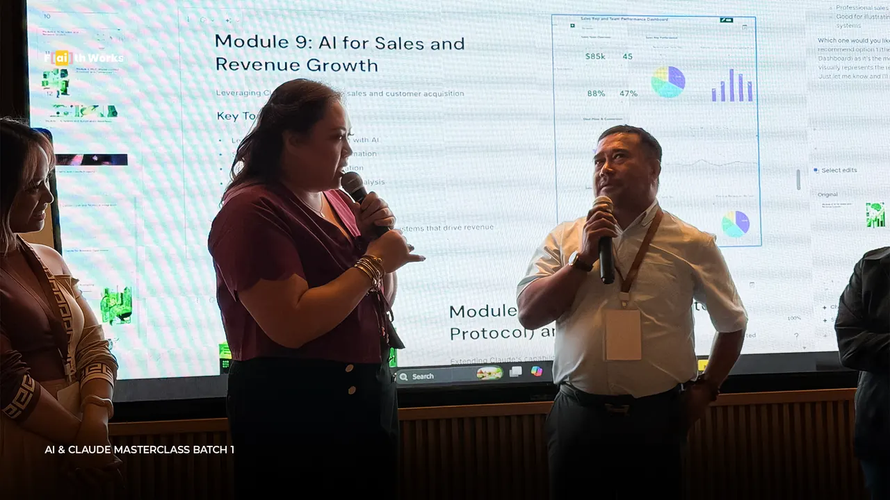
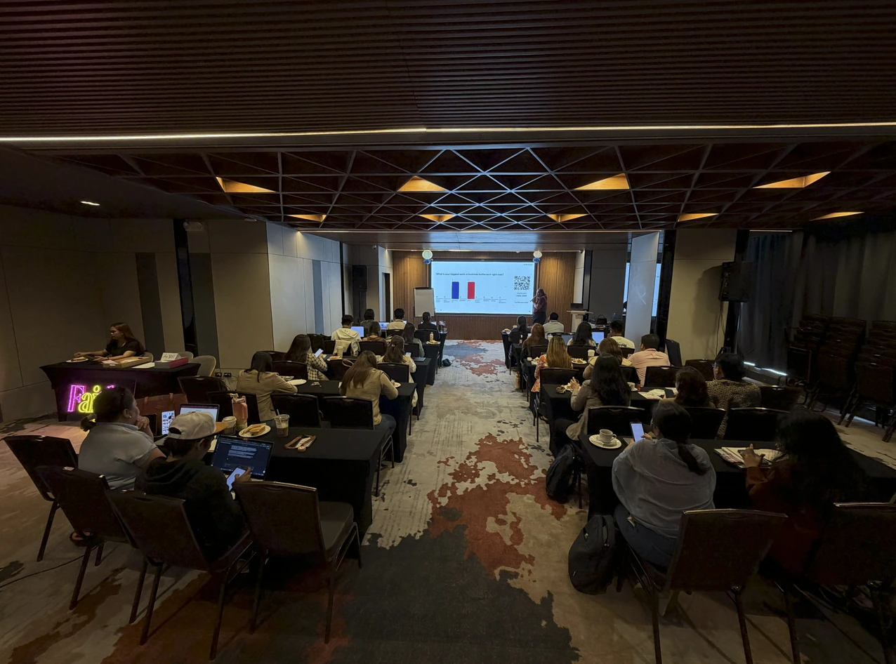

AI Agent Builder Bootcamp
A proposed bootcamp for building a simple business assistant with guidance, from one clear use case to a tested first version.
- Next intake
- To be announced
- Format
- Proposed: seven sessions of two hours
- Time commitment
- Proposed: 14 hours across seven sessions
- Location
- To be confirmed
- Fee
- Published when the next intake is confirmed
- Instructor
- To be confirmed


Who it’s for
You want an assistant that helps with real work, without handing decisions to a tool you cannot check.
- Founders and operators with a clear, repeatable use case
- Learners who have completed an introductory program
What you’ll learn
- Define one assistant use case with clear inputs and limits
- Build a first version with guidance
- Test it with review points and a human escalation path
What you leave with
- An assistant use-case brief
- A tested first version with documented review points
Illustrative example. Your output depends on the task you bring.
Can I move my session to next week?
Draft reply: “Yes, here are the available dates…”Needs your review
Refund request detected → handed to a person
How it runs
The outline below is the planned flow. Session dates and durations are confirmed with each intake.
-
Define the use case
One task for the assistant, with clear inputs, limits and what it should never decide.
-
Build the first version
Set up the assistant step by step with guidance, using AI tools.
-
Test with review points
Check its answers, mark where a person reviews, and set a path to hand off to a person.
Requirements and scope
What you need
- To be confirmed: tools, prerequisites and accounts
Not included
- A supported production assistant for your business
Questions about this program
Can I register now?
Not yet. Tools, prerequisites, support and fees are still being confirmed. Register your interest to hear first.
Register your interest.
There is no open intake yet. Leave your details and we will contact you when dates, fees and inclusions are confirmed. No payment is taken here.
Planned, not yet open